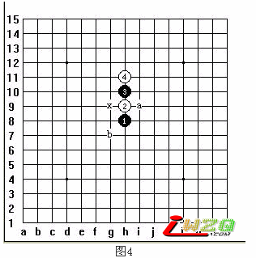

定式详解:直止打法第一局：寒星定式
#1 定式详解:直止打法第一局：寒星定式 作者：有志青年 发表时间：2007-4-25 8:27:37
寒星局是五子棋26个开局中直止打法的第一局，属于黑大优开局。
分析开局的优劣，我个人的观点认为还是应该以开局所形成的棋型为重。
首先，我们根据这个开局来做一个判断，判断的方法，就是根据盘面上现在已有的棋子所形成的棋型，来预测后势可能的变化，从上图中我们来做一个分析，黑下一手走在什么位置最有利？
在这个图中我们可以看到，黑下一手最有利的点是在I9或其对称点g9上。为什么会选择这个点？再看上图中左下角给出的棋型——是黑形成的三角型结构，而三角型具有很强的进攻性，能演变出其它很多进攻性极强的棋型，比如右下角给出的棋型——“梅花阵”就是由三角形棋型演变而来的。
所以我们说寒星局具有很强的进攻性，属于黑大优的开局，由于其执黑一方优势太大，目前职业对局中基本已经淘汰不用了，而所以被淘汰不用，很大程度上是因为受到职业比赛规则所限制。
寒星开局后，通常白4手可有以下几个应点可选：
假如白4应a点：

白4选择H11靠立，属于模仿黑棋，实际上防守能力比较弱。因为黑方有五手两打点：
1、为a点(I9)；
2、为b点(G7)；
两点均为黑必赢点。
x点因与a点属于“对称点”，所以不能作为第二个五手两打点来选择，因为其对称关系，固所产生的变化是完全对称、相同的。
黑5选择a点：
黑形成两个斜二，构成了“图2”中的三角型，此后，白6手又有以下几点可选：
(a) 白6防于a点：
白6防于a点（g10）继续模仿黑棋：

则，黑有如下胜法：
黑1向下成斜活三，白2不能再模仿黑，只得转为防守。黑3继续朝右下再冲，成斜活三；白4防守。黑5活三；白6挡！黑7、9连冲四，黑11活三，白12上方防守。黑13跳冲四，黑15冲四活三，胜定。
该定式手顺全谱如下：
上边介绍的是一个标准定式的走法，但我个人觉得这个定式不太好，请看下图：
黑17后，白18在A位置会形成一个反三，就是我认为这个定式不太好的理由。尽管可能会有棋手对我的这个理由提出反驳意见，但我想说明的是：尽管此时黑完全占据了先手优势，后势是J7、I6连冲四的VCF杀，但这个定式可能会给初学者带来一些误区。
因为对于初学者，并不向已经有一定基础水平的棋手那样，他们存在着几个问题：
1、 计算深度和广度上都不如有一定基础的棋手；
2、 一但发现对方形成反三，会习惯性的去放弃自己的先手，而改为防守去应对方的三。
尽管第2点是初学者所犯的一个习惯性错误，但毕竟对于初学者是有这个错误存在的可能性的。
更何况我个人观点也认为这个定式不够严谨，因为我认为它没有必要非要这样去让对方形成一个反三。能从开始一直下到胜出，不仅不丢先手，而且还能尽量叫对方无法做出反棋来的，我认为才是水平的体现。所以我个人观点认为这个定式可以做一定的修改，如下图：
图10和图8有典型的不同，图8是直接的冲杀，图10是做杀，黑13落子后，与a、b两点形成下一步的四三杀，如果被白应掉这一路，则黑13还可以在c点与黑7成斜活三，而后在d点形成四三杀。这样的变化，无论白怎么应，均无法形成反。
五子棋的变化很多，图中所述的只是寒星中的一个变化，根据黑的发展，白有不同的应点，根据白的应点，黑有不同的对策，至于其他个点，读者可以先做一个推敲，在后边的文章里，我会把其他点的变化补充进来。
本节习题:
图8中:
1、白12变化。黑方如何胜？
2、白8变化。黑方如何胜？
#2 寒星定式002 作者：有志青年 发表时间：2007-4-25 8:34:54
顶楼中，介绍了白6手应a点时黑的变化，并通过对习题的练习，我们可以得出这样一个结论，黑5落I9后，白6应a点必败！
本节我们将讨论图1中白6应b点的变化，见图2：
白见黑5落子后形成双活2，于是6也模仿黑成双二，企图与黑方展开对攻。在战术上这个虽然符合开局抢2的原则，但做为白棋来说，却在战略上犯了一个错误，因为黑棋是先手，先者挟势，而白棋作为后手，则应当以守待攻为妥。
白6落I10后，黑1下冲j8白2挡，黑三上冲整形，白4应，则此时黑构成图3之“燕阵”，绝杀棋型！（专业定式介绍到这里就完成了，结论是：“一般说来，此局棋的结局多为黑棋获胜。”以下是我个人的推算，认为必胜，请在阅读时候，自行评判。）
图3中白4落K11后，形成“燕阵”，我个人认为“燕阵”是属于必杀的棋型，详见图4：
黑1当，并成跳活三，白2中间断，黑3落K8继续成跳活三，白4中间再断，黑5冲4，白6挡，黑7继续成三，至此，黑始终保持先手，手手进攻，到黑7后，白8在图4中有两个应点：A、B。
白8应A点， 则有如下变化：
白2应K9（既为图4中白8应a点）：黑3下冲四，白4挡，黑5成跳三，白6中间断，黑7下冲三，白8挡h4，黑9落J4，双示点！在图中a、b两点均形成下一着的四三杀。
当图4中白8应b点时，则另有变化如下：
白2应K5(图4中白8应b点)：黑3跳冲四，白4中间断，黑5斜活三，此时白又有A、B两个应点。
假如白6应A点：则黑有如下杀：
白6应图6中A点：则黑7直接n10，双示点，一子双杀！既：在a点形成一个四三杀，另一个在下一着形成先b后c点的vcf。
假如图6中白6应B点：
白6应m8（图6中B点）：则黑7落J7成活三，白8挡，黑9冲4，白10应，黑11做棋后，在A点形成43杀。这里需要特别强调的是这个11手是怎么计算出来的？为什么要这么计算？其实这个11手也可以直接走A点冲4，然后再走这个I11结果是一样的，只是一般来说职业棋手的习惯是尽量不要去走多余的着，要明白“你落一子，敌增一兵”的道理，多余的棋走多了，相应的也会叫对手在阻挡中把自己的棋走厚。所以通常的习惯是尽量的减少手数，除非特别需要的情况下（比如有vcf和vct两种杀法的情况下，使用vcf需要10几手才能杀净，而使用vct可能只需要5、6手，那么这时候就情愿使用10几手的vcf而不使用只需要几手的vct，当然这只是我个人的习惯，可能别的棋手并不一定赞同，也可能他们认为只要能杀就行，但我个人的观点是应该严谨，毕竟vcf是都是叫对方绝对的必应手，而vct不是）。
那么做11手的意义又何在呢？请看下图：
以前我给大家介绍过，在棋盘上的所存在的任何的子都是有用的，也都是有灵魂的，它们不是死的而是活的，所以在下棋的时候，不仅仅要注意局部战术上的优劣，同时还要注意大盘整体战略的变化。
图9中给出了整体线位的分析方式，五子棋有8个方向——上、下、左、右、右上、左上、右下、左下。因此在大盘整体线位上来说，也同样也就需要同时分析八个方向上所形成的交叉点。红线给出的是交叉线的方向，红点儿表示在交叉线上可以落子的选点位置（我把这种线与位的结合关系，叫线位，对线位的敏感性就叫线位感）。
那么，假如在G9、I7点上能有子的话，G7点冲4就形成四三了，于是这两个点就可以作为“备选点”。接下来就是如何能叫这两个点落上两个子来？如果在j13上能有一子，那么G9点就可以落子了，因为当J13上有子以后，再在G9上落子就会在I12形成一个四三结构的叫杀点，而J13上落点，就必须在K12或J11上有子的存在，k12落子显然没有什么意义，白可以不应，而转防守为进攻，这样一来黑就丢掉了先手，而白的外势结构强劲，先手一丢，基本可以肯定就输掉了。而I11好点！，I11落子后在A位就形成了四三的叫杀点，白必应。这就是图8中黑11由来的理由。看下面的结果：
黑
#3 Re:定式详解:直止打法第一局：寒星定式 作者：lmhcx 发表时间：2007-10-19 8:21:51
很好，学习中#4 Re:定式详解:直止打法第一局：寒星定式 作者：牛文涛 发表时间：2008-5-5 15:28:00
棋谱太好了 顶一下 （要是能下载就更好了）
#5 Re:定式详解:直止打法第一局：寒星定式 作者：晓 发表时间：2008-5-8 16:43:02
五子棋术语中的vcf是什么.#6 Re:定式详解:直止打法第一局：寒星定式 作者：糖醋小排 发表时间：2008-6-9 13:45:53
图8中白8应黑9的位置，黑应如何胜？应该I7，G9，G6，F8，F7，对不对啊，有志大哥！
#7 Re:定式详解:直止打法第一局：寒星定式 作者：远山的呼唤 发表时间：2008-9-6 13:39:53
看了以后很受启发，特别是做棋的思路和方法让人有豁然洞开的感觉，值得一看，以后多发这样的帖子，我会一直关注的，我学的时间不长，很喜欢这个网站，谢谢！#8 Re:Re:定式详解:直止打法第一局：寒星定式 作者：无生无灭 发表时间：2008-10-5 18:03:37
VCF是victory of continuous four 的缩写，就是连续冲四胜，不知道我解释的够不够请楚